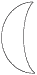

Le Ménage ès Feuvres,
Lé 30 dé juilet, 1983.
St Ouën,
Moussieu l'Rédacteu,
J'sis chanceux! M'èrvéla, par la grâce dé Dieu, en Jèrri acouothe eune fais. J'avais quâsi pèrdu espéthance dé lé r'vaie, chu charmant p'tit pays dé ma naîssance, paradis mondial dévant qué l'camas d'la machinn'nie modèrne et l'catchet touristique eûssent disteurbé sa trantchilité d'aut' fais.
Ch'est p't-ét' bein drôle, mais ouaithe qué j'ai veu les p'tits c'mîns et hauts fossés du vaîsinné d'man vièr ménage des mille fais, lé sentiment dé la jouaie d'vivre et d'harmonie mé nouôrrit acouo l'esprit à m'suthe qué j'les hantent et qu' j'en respithe lus parfum. Et j'voudrais pouver l'mett' en boutelle et l'enm'ner auve mé en Améthique pour parfunmer l'air dé mes vièrs jours là-bas en r'pôsant ma vielle poutchie d'os.
L'aut' sé, j'viyais l'craîssant, et v'là tchi mé ramémouaithe tch'il 'tait là étout quand j'avais acouo les talons jaunes, et tch'i' y'avait des ditons et des crianches entouôrre. Il' 'taient partie d'la vie d'nouos anciens, les ditons et les crianches, comme nouos l'dit l'Docteu Fraînque Le Maistre dans les Bulletîns d'Quart d'An d'L'Assembliée d'Jèrriais: -
"Mots et ditons dé nouos vielles gens,
Et en mémouaithe du bouon vièr temps -
Penses-s-y tchiquefais, car ch' est d'tchi vyi -
Brédelles et mots d'nouot' chièr Jèrri!"
 Ieune des ditons entouôrre est: "J'ai veu l'craîssant; tch'i' mé vieil'ye donner bel et grand." Eune crianche est qu' ch'est mauvaise chance dé lé r'garder par la f'nétre pour la preunmié fais. Nou peut aller d'houors lé vaie pardessus l'êpaule drouaite et en même temps nou dait taper sa pouchette d'un coup sé auve la main. Ou si'en tout cas faut aller d'houors, lé r'garder l'travèrs des bouais. Si tout ch'la n'est pon fait, ch'est la pouôrreté à v'nîn. Eune aut' crianche est qué, l'ayant veu, l'craîssant, par la f'nêtre, i' faut lî montrer d'l'argent dans sa main. Et pour aver bouanne chance i' faut l'saluer neu fais.
Dans la salle du Ménage, ch'tait acouo l'crâsset tchi donnait sa faillie lueu quand j'tais mousse, et ma grand-grand'méthe, tréjous assise à la carre dé l'âtre, disait: "Y'a un chapé au crâsset; j'allons vaie tchitch'uns." J'mé r'souveins qu' j'avais d'la peine à discèrner l'chapé, mais, en éffet, tchitch'un v'nait passer la séthée. Dans des temps quand j'allais la vaie, ma grand-grand'méthe, j'viyais des gros pêtres dans la votte du pits, et quand oulle allait qu'si eune bouqu'tée dg'ieau j'aimais bein la vaie d'valer et ramonter l'sieau dans l'pits atout l'aîgue du gîndas.
Quand j'li montrais les pêtres ou m'disait: "I n'faut janmais lus faithe dé ma, ès pêtres. Y'en a iun qu'nou-s-appelle un pétre à sou. Ch'est un p'tit pétre, ch'tî-là, et si nou-s-en happe iun i' n'faut pon l'tuer, car ch'est bouanne chance. Si nou-s-en vait iun marchi sus sé, ch'est sîngne qué nou s'en va r'chéver des sou.
Et en pâlant d'sou, l's anciens criyaient qué ch'tait bouanne chance dé porter eune pétite pièche sus sé, sustout la pus p'tite, lé tout temps pâssé eune fréluque, pus tard un liard, et pis un siex-sou en argent. Ch'tait bouanne chance, étout, dé porter un sou pèrchi sus sé, ou un siex-sou ou même un ch'lîn, touos pèrchis, mais ch'tait mauvaise chance dé donner autcheune dé ches pièches pèrchies à autcheune pèrsonne.
En m'promenant, la rencontre d'eune pèrsonne mé ramémouaithe la crianche des anchêtres qué ch'tait mauvaise chance dé pâsser tchitch'un dans eune montée. Iun d'vait arrêter pour laîssi l'aut' pâsser, mais létché des deux? Et s'il' arrêtent touos les deux en même temps? J'n'ai janmais seu la réponse!
Eune vielle fil'ye tchi rencontrait eune femme mathiée la preunmié chose lé lundi matîn 'tait sîngne dé malheu ou d'embarras. Et la méme chose si ch'tait qu'un vièr garçon rencontrait un homme mathié. Mais l'piéthe dé tout 'tait qué si nou rencontrait tchitch'un tchi vouos r'gardait gare ch'tait sîngne dé mauvaise chance lé restant du jour !
Et en rentrant dans l'vièr Ménage, i' m'veint à l'idée tch'il est vyi assez (il a quat' chents ans) pour aver ieu eune branque dé louothi mînse dans la machonn'nie sus la cheunm'née quand i' fut bâti pour bouanne chance, eune aut' crianche du temps jadis tch'est p't-ét' la cause qué j'avons tréjous 'té Louothièrs dans nouot' fanmil'ye!
Viyiz étout: